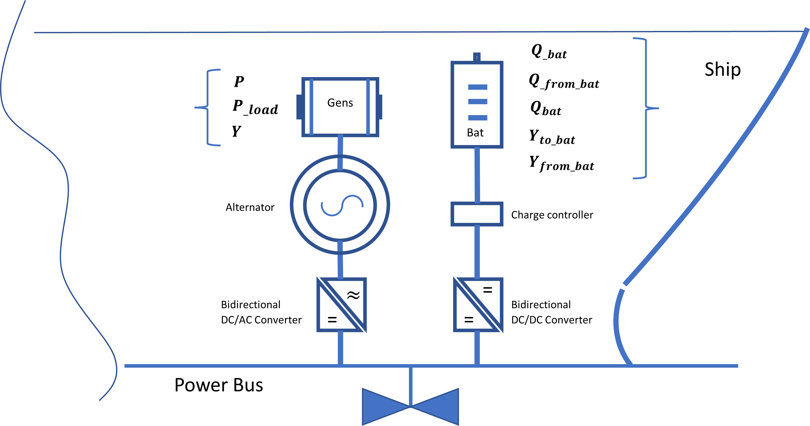

Problem size.¶
comuputation cost is the most implicaated factor when it comes to designing optimization based software solutions as it can affect the speed for processing information and hence delaying outputs.

Therefore, We need to know the problem size in order to see if the problem is computationaly cost effective or not, our problem size is mainly dependant on the size of the load window time frame (i.e., steps \({n}\) ), the number of LP variables, the number of gensets \({m}\) (we use 1 genset in our case) and the numbere of problem constraints.
\[\begin{flalign*}
\begin{cases}
- Continuous &: & 6.n.m \\
- Binary &: & 4.n.m \\
- Constraints &: & 9.n.m
\end{cases}
\end{flalign*}\]